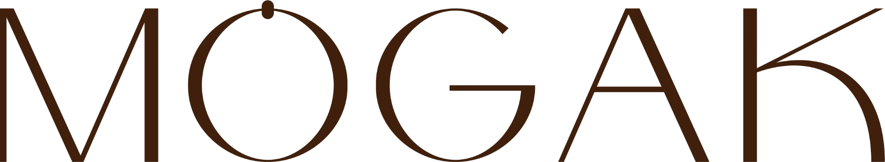
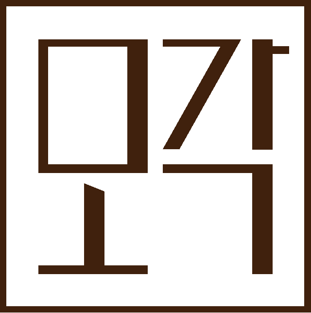
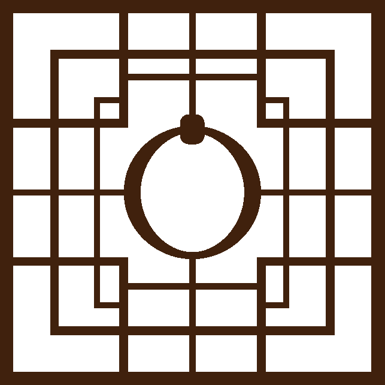
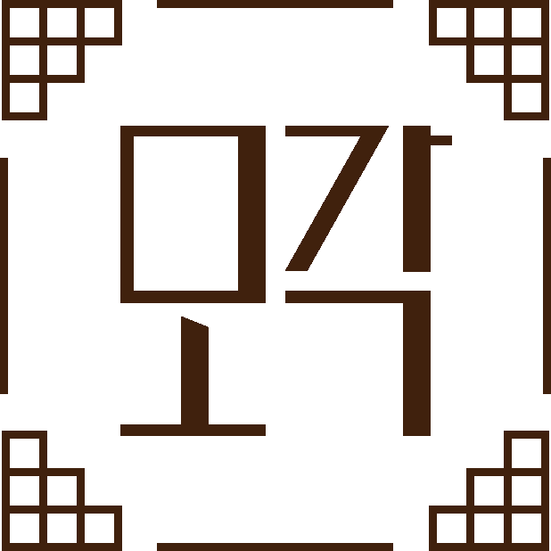
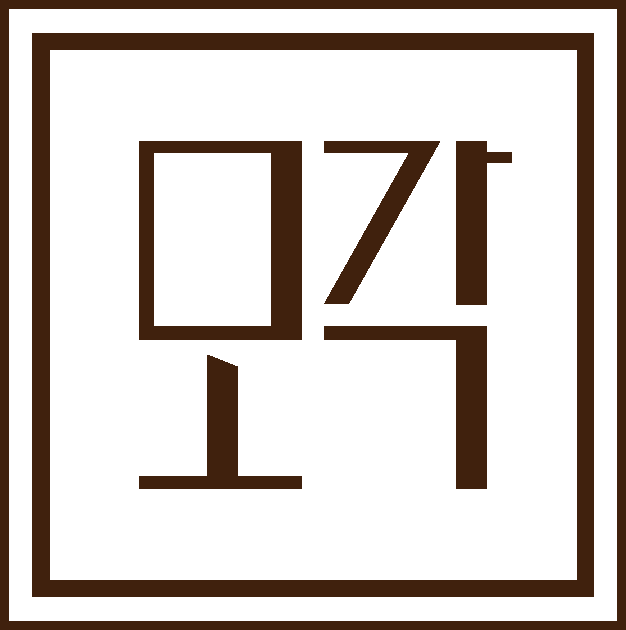

T-01
Logo & Brand Identity
워드마크의 O 위에 문고리를 달아 문을 여는 순간을 그렸고, 한글 ‘모각’은 문살처럼 곧은 획으로 짜서 네모난 인장 안에 담았습니다. 인장과 문살 프레임, 문고리 엠블럼은 박스 · 스티커 · 택 · 상세페이지에 같은 규칙으로 쓰입니다.
01 PRIMARY LOGO

02 SYMBOL & FRAME
- SEAL대표 인장 · 스티커

- DOOR EMBLEM문살 + 문고리 O

- LATTICE FRAME박스 · 안내지

- DOUBLE FRAME택 · 각인

03 VARIATION
- BROWN / IVORY기본
- IVORY / BROWN박스 · 어두운 바탕
- GOLD FOIL박스 금박
- SYMBOL ONLY보자기 택
04 COLOR CODE
- PRIMARY모각 브라운로고 · 본문
- HEX
- #40210D
- RGB
- 64 33 13
- WOOD문살 우드박스 · 소품
- HEX
- #8A5A3B
- RGB
- 138 90 59
- ACCENT조청 골드금박 · 강조
- HEX
- #C9A46A
- RGB
- 201 164 106
- FABRIC노방 핑크보자기 · 배경
- HEX
- #DCC3B0
- RGB
- 220 195 176
- BASE한지 아이보리바탕 · 안내지
- HEX
- #F1EAE0
- RGB
- 241 234 224
- PRODUCT약과 앰버제품 · 포인트
- HEX
- #D9762B
- RGB
- 217 118 43